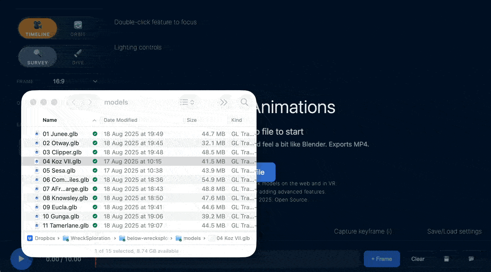
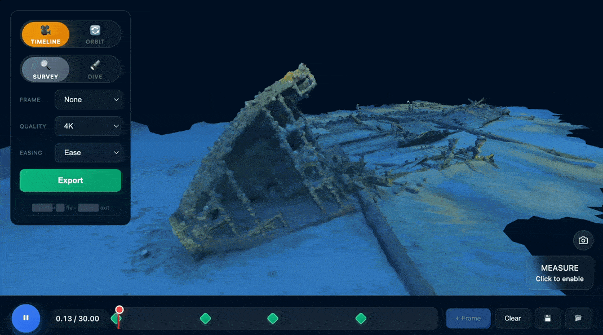
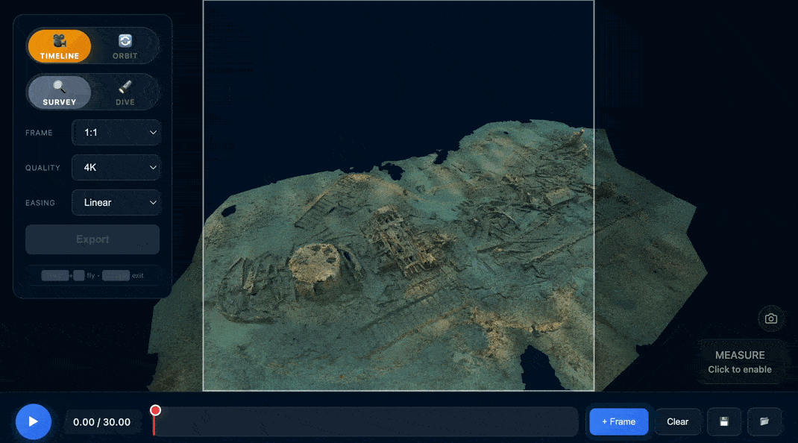
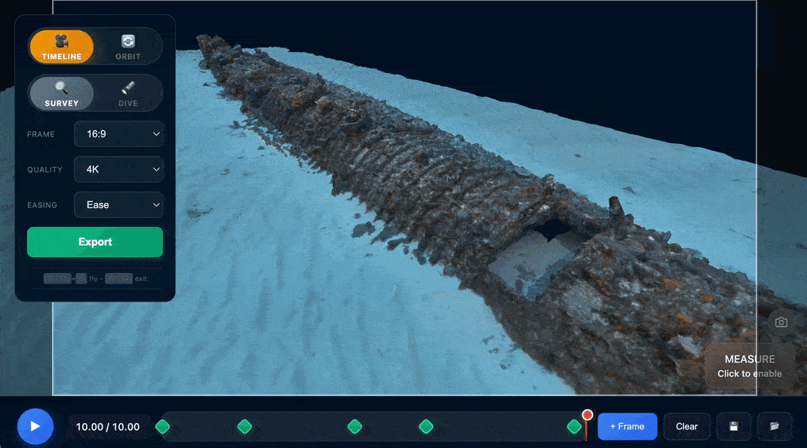
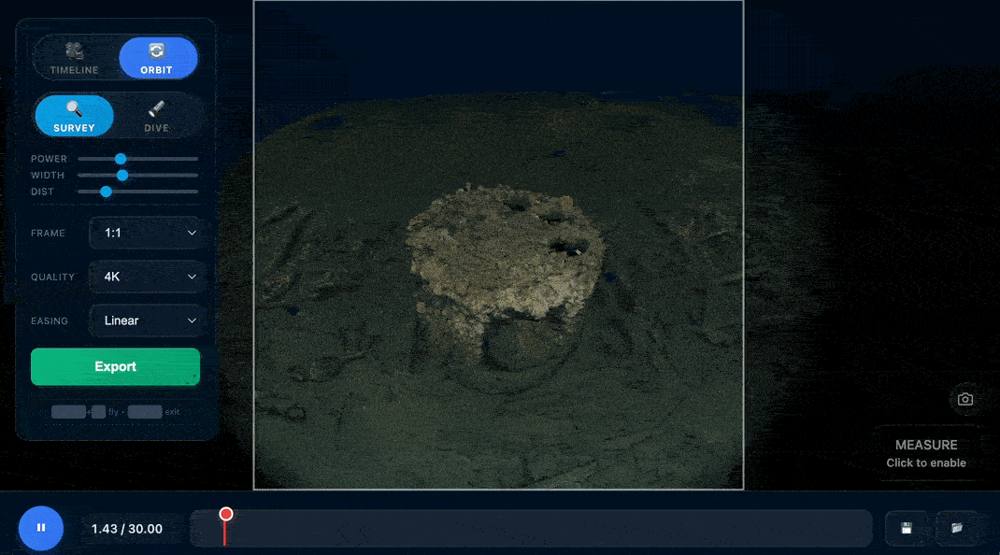
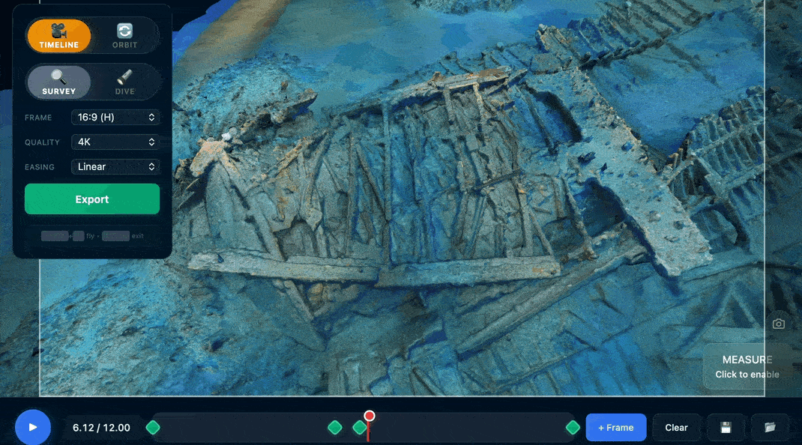

Patrick Morrison, 26 December 2025
Typically we use Blender to create shipwreck flythrough animations: import the model, keyframe some camera views, and wait for it to render. The BelowJS Animation example does this in seconds, right in the browser, with the same studio lighting system used in all BelowJS viewers.
This example serves two purposes: first, to show what can be built on top of the core viewer (see code). Second, to provide something genuinely useful, replacing the unflattering Sketchfab screen recordings that sometimes end up on TV.
1440p, 4:3, linear, timeline and orbit of K XI Submarine. Models from WrecksplorationVR.
If you want accurate measurements, make sure your model is scaled properly. Follow the Model Setup guide and Model Optimisation guide to prepare your .glb file. Otherwise, you can probably just download a .glb from Sketchfab and go from there.
The Animation example uses the same studio lighting system as all BelowJS viewers, so your model will look exactly the same as in the main viewer or VR.
Open the Animation example and drag your .glb file onto the viewer, or use the file picker. The model loads with dive mode lighting by default.
Click and drag to orbit, scroll to zoom. Double-click on a feature to focus on it.

Position the camera where you want and click the + button to add a keyframe. The timeline shows your keyframes as markers. Click on them to jump to that view, or drag to reorder.
You can navigate using either mode:

Tip: The most professional-looking visualisations are often the simplest: slow, steady movements with linear interpolation. Fast, floaty camera work makes sites feel small and too "CGI." Cinema is full of slow, sweeping shots with purpose.
For quick 360° feature shots, double-click on a point of interest to focus on it. The camera will smoothly orbit around that feature in a seamless loop. Perfect for highlighting specific details or artefacts.

Click Export to render and download your animation as an MP4. The progress bar shows render progress in real-time.
Aspect ratio and resolution are separate settings. Use 4K unless you have a reason not to, like if it's just going on Instagram or you need to email a long file.
| Aspect Ratio | Best For |
|---|---|
| 16:9 | Most visualisations, YouTube, presentations |
| 9:16 | Instagram Reels, TikTok, mobile-first content |
| 4:3 | More immersive feel, PowerPoint/Keynote slides |
| 1:1 | Instagram posts, thumbnails, small video embeds in articles |

Adjust the torch beam width, intensity and distance falloff, with the same lighting system used across all BelowJS viewers.

Use the measurement tools to add scale references for archaeological documentation. The export shows the line but not the measurement number, leaving it up to you in editing and captions.
Markers within 3 frames will snap together, creating a cut. You can use this to create animations like the one of K XI at the top of this page.

The animation tool works on phones, but defaults to 1080p rather than 4K due to limited mobile RAM. The quality still looks great - the video below was created on my iPhone.
For Powerpoint/Keynote presentations, you can export each segment separately in the export screen. Short clips (2-3 seconds) between features work well when split per slide as auto-playing videos. You can design a slide for how it settles at the end of each movement, annotating features while keeping the sense of space intact.
Tip: Linear interpolation is a nice default, good for single movements. Ease gives a pleasant start and stop between keyframes, good for segmented presentations. Smooth is traditional bezier interpolation, moving seamlessly through the whole animation. Use smooth with care to avoid a nauseating flythrough and the overused "3D model" effect.
Keyframes and settings are lost on reload, so you can save. Click Save to download a JSON file with your keyframes and settings (not the model) that you can load later or share with colleagues.
Ready to create your first animation? Open the Animation example and load a model. For the best results, start with a properly optimised .glb file.